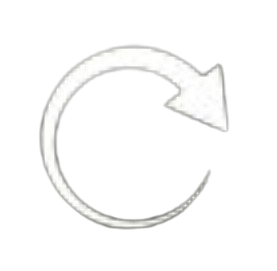

RM
Rice Moisture
Online Monitoring System
🏠 Home
📊 Data Sensor
📡 Monitoring Langsung
📈 Grafik dan Laporan
ℹ️ Tentang
🚪 Logout
Sistem Pengukuran Kadar Air Beras
User Admin
CEO
Grafik dan Laporan
 Perbarui Data
 Unduh PDF